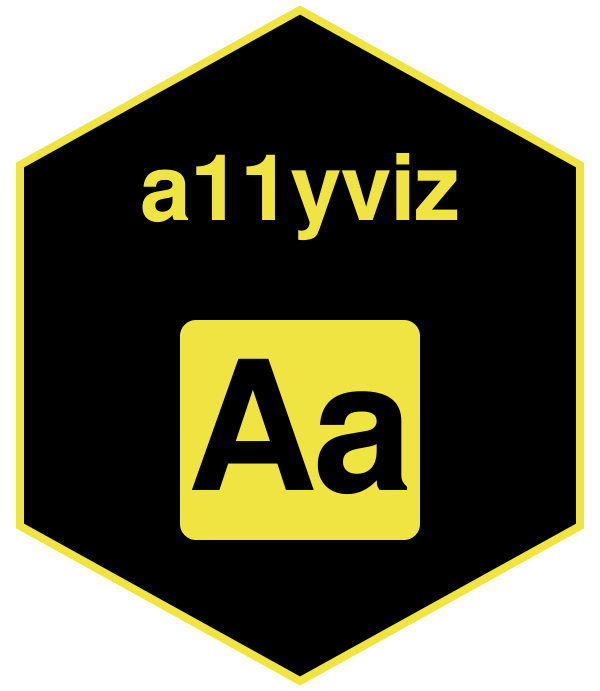

Makes charts and documents accessible across ggplot2, plotly, and Quarto, aligned with the Web Content Accessibility Guidelines (WCAG 2.1). Includes WCAG-tagged palettes, alt-text scaffolds, audits, a document rubric, heading and reading-level checks, shiny ARIA helpers, and a stylesheet for DT and DiagrammeR.
Python sibling: a11yviz.
Quick start
library(ggplot2)
library(palmerpenguins)
library(a11yviz)
p <- ggplot(na.omit(penguins),
aes(flipper_length_mm, body_mass_g,
color = species, shape = species)) +
geom_point() +
scale_color_a11y("dark2_8") +
labs(x = "Flipper length (mm)", y = "Body mass (g)")
a11y_alt_text(p, "Scatter of penguin body mass vs flipper length by species.")Citation
Shin, M. (2026). a11yviz: Accessibility toolkit for ggplot2, plotly, and Quarto (R package version 0.1.2). https://mshin77.github.io/a11yviz
Shin, M. (2026). a11yviz: Accessibility toolkit for plotnine, plotly, and Quarto (Python package version 0.1.2). https://github.com/mshin77/a11yviz-py